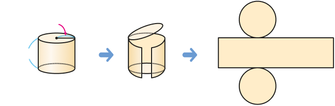

원기둥의 전개도에서 옆면의 가로와 세로를 알아봅시다.
전개도에서 옆면의 가로와 세로는 각각 원기둥의 무엇과 같은지 선을 이어 보세요.

3 ㎝
5 ㎝
옆면의 가로
옆면의 세로
원기둥의 높이
원기둥의 밑면의 둘레
옆면의 가로를 구하는 방법을 이야기해 보세요.
3 ㎝
5 ㎝
옆면의 가로는 원기둥의 밑면의 둘레와 같으므로 (밑면의 지름)×(원주율)로 구합니다.
전개도에서 옆면의 가로와 세로는 각각 몇 ㎝인지 구해 보세요.
3 ㎝
5 ㎝
옆면의 가로:
㎝
옆면의 세로:
㎝
입력타입토글
리셋
확인
제출